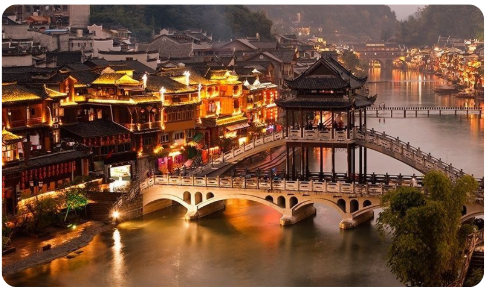
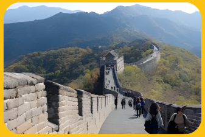
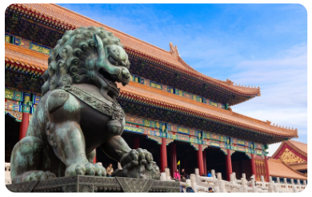
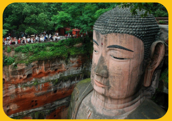

Pontos Turísticos da China
Cidade Antiga de Fenghuang
A Grande Muralha da China é uma das estruturas mais icônicas do mundo, estendendo-se por mais de 13.000 milhas. Construída para proteger o império chinês de invasões, a muralha é um testemunho impressionante da engenharia antiga e da determinação humana.
A Grande Muralha da China
A Grande Muralha da China é uma das construções mais impressionantes e simbólicas do mundo, erguida ao longo de séculos para proteger o império chinês de invasões e ataques. Com mais de 21 mil quilômetros de extensão, ela atravessa montanhas, desertos e planícies do norte da China. Sua construção começou por volta do século III a.C., durante o governo do imperador Qin Shi Huang, e foi ampliada por várias dinastias, principalmente a Ming. Feita de pedra, tijolos e terra compactada, a muralha serviu tanto como defesa militar quanto como rota de comunicação. Hoje, é um Patrimônio Mundial da UNESCO e símbolo da força, engenhosidade e história milenar da civilização chinesa.
Cidade Proibida
A Cidade Proibida, localizada no centro de Pequim, foi o palácio imperial da China por quase 500 anos, abrigando os imperadores das dinastias Ming e Qing. Construída entre 1406 e 1420, é um vasto complexo com cerca de 980 edifícios e mais de 8 mil salas, cercado por altas muralhas e um fosso, simbolizando o poder absoluto do imperador, considerado o “Filho do Céu”. Seu nome vem do fato de que o acesso era proibido ao povo comum, sendo permitido apenas à família imperial e seus servos. A Cidade Proibida é um exemplo magnífico da arquitetura tradicional chinesa, com templos, salões e jardins ricamente decorados, e hoje abriga o Museu do Palácio, sendo reconhecida como Patrimônio Mundial da UNESCO e um dos principais símbolos da história e cultura da China.
Grande Buda de Leshan
O Grande Buda de Leshan, localizado na província de Sichuan, na China, é a maior estátua de Buda esculpida em pedra do mundo, com cerca de 71 metros de altura. Esculpido na face de um penhasco entre os séculos VIII e IX, durante a Dinastia Tang, o monumento foi construído para proteger os navegadores dos perigosos encontros dos rios Min, Dadu e Qingyi. A grandiosa escultura, que representa o Buda Maitreya, foi cuidadosamente projetada com um sistema de drenagem interno para resistir ao tempo e à erosão. Hoje, o Grande Buda de Leshan é considerado um Patrimônio Mundial da UNESCO e um importante destino de peregrinação e turismo, simbolizando a fé, a arte e a engenhosidade da antiga civilização chinesa.